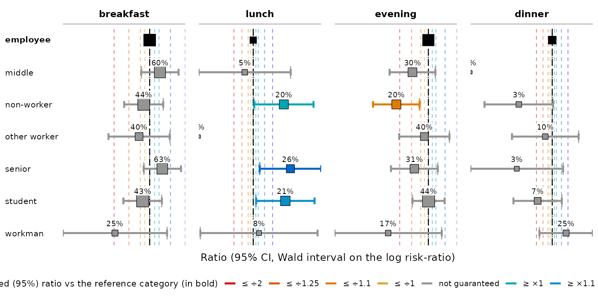

Une version française de ce document est disponible : Introduction à tabxplor.
The first time only, install the package :
install.packages("tabxplor", dependencies = TRUE)At the start of each new R session, load it :
tabxplor helps you explore data with
cross-tables, coloring the cells so you can read a table at a
glance. Over-represented cells use shades of blue,
under-represented ones turn red/orange, so patterns jump out without you
squinting at every number.
Everything is a tibble, so the result works with the
usual dplyr verbs, and tables export to Excel, HTML and
Markdown with their color helpers. Underlying heavy computations run on
data.table
No R needed, if you prefer menus. Everything below
is also available point-and-click, through a module for jamovi — a free, open-source
statistical software. Install it, open the modules menu (the
+ at the top right), choose jamovi
library, and install tabxplor: it adds a
Crosstables analysis and a Regressions
analysis, with the same coloured, exportable tables. The options carry
the same names as the arguments taught here, so this vignette reads as
its manual.
Throughout this vignette we use gss_simple, a cleaned-up
version of the US General Social Survey (forcats::gss_cat)
with factors levels merged and reordered.
gss_simple <- gss_cat_data_formatting()Your first cross-tables
tab() needs a data frame, a row
variable and a column variable. By default it
shows counts:
tab(gss_simple, marital, race)| race | ||||
|---|---|---|---|---|
| marital | White | Black | Other | Total |
| <n> | <n> | |||
| Married | 8 316 | 869 | 932 | 10 117 |
| Separated | 437 | 196 | 110 | 743 |
| Divorced | 2 676 | 495 | 212 | 3 383 |
| Widowed | 1 475 | 262 | 70 | 1 807 |
| Never married | 3 478 | 1 305 | 633 | 5 416 |
| NA | 13 | 2 | 2 | 17 |
| Total | 16 395 | 3 129 | 1 959 | 21 483 |
This is tabxplor’s html table — what you get in the RStudio or Positron Viewer pane with the recommended session option, used throughout this vignette:
options(tabxplor.print = "html")Without the option, the same table prints in the
console, as a colored tibble — same
information, lighter display:
tab(gss_simple, marital, race)#> # A tabxplor tab: 7 × 5
#> marital White Black Other Total
#> <n> <n> <n> <n>
#> 1 Married 8 316 869 932 10 117
#> 2 Separated 437 196 110 743
#> 3 Divorced 2 676 495 212 3 383
#> 4 Widowed 1 475 262 70 1 807
#> 5 Never married 3 478 1 305 633 5 416
#> 6 NA 13 2 2 17
#> 7 Total 16 395 3 129 1 959 21 483Add pct = "row" for row percentages (or
"col" for column percentages). A Total
row/column and a count column (n) are added
automatically:
tab(gss_simple, marital, race, pct = "row")| race | ||||
|---|---|---|---|---|
| marital | White | Black | Other | Total |
| <row%> | <row% (n)> | |||
| Married | 82% | 9% | 9% | 100% (10 117) |
| Separated | 59% | 26% | 15% | 100% ( 743) |
| Divorced | 79% | 15% | 6% | 100% ( 3 383) |
| Widowed | 82% | 14% | 4% | 100% ( 1 807) |
| Never married | 64% | 24% | 12% | 100% ( 5 416) |
| NA | 76% | 12% | 12% | 100% ( 17) |
| Total | 76% | 15% | 9% | 100% (21 483) |
When the column variable is numeric,
tab() shows its mean in each row instead
of percentages:
tab(gss_simple, marital, age)| age | |
|---|---|
| marital | mean |
| <mean (cv)> | |
| Married | 49 (cv 31%) |
| Separated | 45 (cv 30%) |
| Divorced | 51 (cv 26%) |
| Widowed | 72 (cv 18%) |
| Never married | 34 (cv 40%) |
| NA | 52 (cv 32%) |
| Total | 47 (cv 37%) |
You can pass several row and column variables at once.
| party3 | tvhours | |||||
|---|---|---|---|---|---|---|
| levels | 1-Democrat |
2-Independent, other |
3-Republican | Total | mean | |
| <row%> | <row% (n)> | <mean (cv)> | ||||
| race | White | 40% | 20% | 40% | 100% ( 8 544) | 2.8 (cv 84%) |
| Black | 76% | 16% | 8% | 100% ( 1 676) | 4.2 (cv 83%) | |
| Other | 52% | 30% | 18% | 100% ( 1 014) | 2.7 (cv 85%) | |
| Total | 46% | 20% | 33% | 100% (11 234) | 3.0 (cv 86%) | |
| relig | 1-Protestant | 44% | 16% | 40% | 100% ( 5 629) | 3.1 (cv 86%) |
| 2-Catholic | 47% | 21% | 32% | 100% ( 2 681) | 3.0 (cv 80%) | |
| 3-Other christian | 42% | 24% | 35% | 100% ( 424) | 2.8 (cv 90%) | |
| 4-Jewish | 67% | 14% | 20% | 100% ( 189) | 2.5 (cv 82%) | |
| 5-Buddhist/Hinduist | 60% | 22% | 17% | 100% ( 116) | 2.2 (cv 85%) | |
| 6-Muslim | 63% | 24% | 13% | 100% ( 63) | 2.4 (cv 89%) | |
| 7-Other | 50% | 29% | 21% | 100% ( 203) | 2.7 (cv 91%) | |
| 8-None | 51% | 31% | 18% | 100% ( 1 929) | 2.7 (cv 95%) | |
| Total | 46% | 20% | 33% | 100% (11 234) | 3.0 (cv 86%) | |
A few other everyday arguments: na = "drop" to drop
missing values from the base, digits = for the number of
decimals, and cleannames = TRUE to strip prefixes like
"1-" from level names. See ?tab for the full
list.
If your numbers are already counted — a published
table, a table(), a count() — start from
tab_counts() instead. It builds the same object, with the
same percentages, colours and tests:
counts <- dplyr::count(gss_simple, marital, race) # or a published table
tab_counts(counts, marital, race, counts = n, pct = "row", color = "difference")| race | ||||
|---|---|---|---|---|
| marital | White | Black | Other | Total |
| <row%> | <row% (n)> | |||
| Married | 82% | 9% | 9% | 100% (10 117) |
| Separated | 59% | 26% | 15% | 100% ( 743) |
| Divorced | 79% | 15% | 6% | 100% ( 3 383) |
| Widowed | 82% | 14% | 4% | 100% ( 1 807) |
| Never married | 64% | 24% | 12% | 100% ( 5 416) |
| NA | 76% | 12% | 12% | 100% ( 17) |
| Total | 76% | 15% | 9% | 100% (21 483) |
|
Percentage points (risk) difference: cell ≥ the Total row +5; +10; +20; +30 points; cell ≤ the Total row -5; -10; -20; -30 points.
|
||||
Colours: reading a table at a glance
One of the main purposes of tabxplor is its palette of
colour helpers for data exploration. color = "difference"
colors each cell by how far it sits from its reference
— by default the Total of its row or column. Cells clearly above the
average turn blue, cells clearly below turn
red/orange — the further a cell sits from its
reference, the stronger the shade — and a color legend is printed
underneath.
tab(gss_simple, race, party3, pct = "row", color = "difference")| party3 | |||||
|---|---|---|---|---|---|
| race | Democrat |
Independent, other |
Republican | NA | Total |
| <row%> | <row% (n)> | ||||
| White | 39% | 21% | 40% | 1% | 100% (16 395) |
| Black | 75% | 16% | 8% | 1% | 100% ( 3 129) |
| Other | 48% | 32% | 18% | 1% | 100% ( 1 959) |
| Total | 45% | 21% | 33% | 1% | 100% (21 483) |
|
Percentage points (risk) difference: cell ≥ the Total row +5; +10; +20; +30 points; cell ≤ the Total row -5; -10; -20; -30 points.
|
|||||
color = "auto" picks a sensible scheme automatically for
each column type (difference as text colour and ratio as
background for percentages, ratio alone for means, …); the legend says
which one:
| party3 | marital | ||||||||||
|---|---|---|---|---|---|---|---|---|---|---|---|
| rincome | Democrat |
Independent, other |
Republican | NA | Married | Separated | Divorced | Widowed | Never married | NA | Total |
| <row%> | <row%> | <row% (n)> | |||||||||
| Lt $10000 | 44% | 25% | 30% | 1% | 37% | 5% | 11% | 4% | 43% | 0% | 100% ( 2 153) |
| $10000 to 14999 | 46% | 26% | 27% | 1% | 41% | 5% | 16% | 5% | 33% | 0% | 100% ( 1 168) |
| $15000 to 24999 | 45% | 25% | 29% | 0% | 43% | 4% | 18% | 3% | 31% | 0% | 100% ( 2 331) |
| $25000 or more | 45% | 16% | 38% | 0% | 55% | 3% | 18% | 2% | 22% | 0% | 100% ( 7 363) |
| NA | 45% | 22% | 32% | 1% | 45% | 3% | 14% | 17% | 21% | 0% | 100% ( 8 468) |
| Total | 45% | 21% | 33% | 1% | 47% | 3% | 16% | 8% | 25% | 0% | 100% (21 483) |
|
Percentage points (risk) difference: cell ≥ the Total row +5; +10; +20; +30 points; cell ≤ the Total row -5; -10; -20; -30 points. Background colour, relative
risk (ratio): cell ≥ the Total row ×1.5;
×2;
cell ≤ the Total row ÷2;
÷4.
|
|||||||||||
Numeric columns are colored the same way, on their means (here, hours of TV per day by income):
tab(gss_simple, rincome, tvhours, color = "difference")| tvhours | |
|---|---|
| rincome | mean |
| <mean (cv)> | |
| Lt $10000 | 3.1 (cv 91%) |
| $10000 to 14999 | 3.0 (cv 78%) |
| $15000 to 24999 | 2.8 (cv 75%) |
| $25000 or more | 2.2 (cv 74%) |
| NA | 3.6 (cv 86%) |
| Total | 3.0 (cv 87%) |
|
Standardized mean difference: cell ≥ the Total row +0.1; +0.2; +0.4; +0.8 SD; cell ≤ the Total row -0.1; -0.2; -0.4; -0.8 SD.
|
|
Which cell is the reference for comparison ? By default each cell is compared to the relevant Total (Total row for row percentages and Total column for column percentages) to highlight over-representations and under-representations. Two useful alternatives:
-
ref = 1compares each level to the first one — perfect for reading an evolution over time, or an ordinal factor. Here the deviation from the year 2000 is read as a ratio (color = "ratio"). - with sub-tables,
comp = "all"compares against the overall Total instead of each sub-table’s own Total.
tab(gss_simple, relig, year, pct = "col", color = "ratio", ref = 1)| year | |||||||||
|---|---|---|---|---|---|---|---|---|---|
| relig | 2000 | 2002 | 2004 | 2006 | 2008 | 2010 | 2012 | 2014 | Total |
| <col%> | <col%> | ||||||||
| Protestant | 54% | 53% | 53% | 52% | 51% | 48% | 46% | 44% | 50% |
| Catholic | 24% | 24% | 23% | 25% | 23% | 24% | 22% | 24% | 24% |
| Other christian | 2% | 3% | 3% | 3% | 4% | 5% | 6% | 6% | 4% |
| Jewish | 2% | 2% | 2% | 2% | 2% | 2% | 1% | 2% | 2% |
| Buddhist/Hinduist | 1% | 1% | 1% | 1% | 1% | 1% | 1% | 2% | 1% |
| Muslim | 0% | 0% | 1% | 0% | 1% | 1% | 1% | 0% | 0% |
| Other | 2% | 2% | 3% | 1% | 1% | 2% | 2% | 1% | 2% |
| None | 14% | 14% | 14% | 16% | 16% | 18% | 20% | 21% | 16% |
| NA | 0% | 1% | 0% | 1% | 0% | 1% | 0% | 1% | 1% |
| Total | 100% | 100% | 100% | 100% | 100% | 100% | 100% | 100% | 100% |
| n | 2 817 | 2 765 | 2 812 | 4 510 | 2 023 | 2 044 | 1 974 | 2 538 | 21 483 |
|
Relative risk (ratio): cell ≥ the reference category (in bold) ×1.1; ×1.2; ×1.5; ×2; cell ≤ ref ÷1.1; ÷1.25; ÷2; ÷4.
|
|||||||||
tab(gss_simple, rincome, party3, race, na = "drop", pct = "row",
color = "auto", comp="all")| party3 | ||||
|---|---|---|---|---|
| rincome | Democrat |
Independent, other |
Republican | Total |
| <row%> | <row% (n)> | |||
| Lt $10000 | 38% | 26% | 36% | 100% ( 1 501) |
| $10000 to 14999 | 40% | 27% | 33% | 100% ( 828) |
| $15000 to 24999 | 38% | 26% | 36% | 100% ( 1 682) |
| $25000 or more | 39% | 17% | 45% | 100% ( 5 843) |
| Total White | 39% | 20% | 41% | 100% ( 9 854) |
| Lt $10000 | 67% | 22% | 11% | 100% ( 374) |
| $10000 to 14999 | 76% | 14% | 10% | 100% ( 207) |
| $15000 to 24999 | 79% | 15% | 6% | 100% ( 400) |
| $25000 or more | 81% | 12% | 7% | 100% ( 881) |
| Total Black | 77% | 15% | 8% | 100% ( 1 862) |
| Lt $10000 | 49% | 31% | 20% | 100% ( 264) |
| $10000 to 14999 | 43% | 44% | 13% | 100% ( 125) |
| $15000 to 24999 | 45% | 39% | 16% | 100% ( 243) |
| $25000 or more | 56% | 22% | 22% | 100% ( 618) |
| Total Other | 51% | 30% | 19% | 100% ( 1 250) |
| Total Ensemble | 45% | 20% | 34% | 100% (12 966) |
|
Percentage points (risk) difference: cell ≥ the Total Ensemble row +5; +10; +20; +30 points; cell ≤ the Total Ensemble
row -5; -10; -20; -30 points. Background colour, relative
risk (ratio): cell ≥ the Total Ensemble row ×1.5;
×2;
cell ≤ the Total Ensemble row ÷2;
÷4.
|
||||
A different reference for each variable.
ref is reinterpreted by pct. Under
row percentages (or means) it picks a reference
row, so a named vector gives each row variable
its own — here race is read against its first row,
relig against its Total:
tab(gss_simple, c(race, relig), party3, pct = "row", color = "difference",
ref = c(race = 1, relig = "tot"), na = "drop")| party3 | |||||
|---|---|---|---|---|---|
| levels | Democrat |
Independent, other |
Republican | Total | |
| <row%> | <row% (n)> | ||||
| race | White | 39% | 21% | 40% | 100% (16 301) |
| Black | 76% | 17% | 8% | 100% ( 3 093) | |
| Other | 49% | 33% | 18% | 100% ( 1 934) | |
| Total | 45% | 21% | 33% | 100% (21 328) | |
| relig | Protestant | 43% | 17% | 40% | 100% (10 794) |
| Catholic | 46% | 22% | 32% | 100% ( 5 090) | |
| Other christian | 42% | 24% | 34% | 100% ( 778) | |
| Jewish | 68% | 12% | 20% | 100% ( 388) | |
| Buddhist/Hinduist | 57% | 29% | 14% | 100% ( 212) | |
| Muslim | 66% | 22% | 12% | 100% ( 99) | |
| Other | 48% | 29% | 24% | 100% ( 384) | |
| None | 50% | 31% | 19% | 100% ( 3 509) | |
| Total | 45% | 21% | 34% | 100% (21 254) | |
|
Percentage points (risk) difference: cell ≥ the reference category (in
bold) +5; +10; +20; +30 points; cell ≤ ref -5; -10; -20; -30 points.
|
|||||
Under column percentages ref picks a
reference column instead, vectorised over the column
variables — either named
(ref = c(party3 = "first", marital = "tot")) or positional,
one value per column variable:
tab(gss_simple, race, c(party3, marital), pct = "col", color = "difference",
ref = c("first", "tot"), na = "drop")| party3 | marital | ||||||||
|---|---|---|---|---|---|---|---|---|---|
| race | Democrat |
Independent, other |
Republican | Married | Separated | Divorced | Widowed | Never married | Total |
| <col%> | <col%> | <col%> | |||||||
| White | 66% | 75% | 92% | 82% | 59% | 79% | 82% | 64% | 76% |
| Black | 24% | 11% | 3% | 9% | 26% | 15% | 14% | 24% | 15% |
| Other | 10% | 14% | 5% | 9% | 15% | 6% | 4% | 12% | 9% |
| Total | 100% | 100% | 100% | 100% | 100% | 100% | 100% | 100% | 100% |
| n | 9 679 | 4 512 | 7 137 | 10 117 | 743 | 3 383 | 1 807 | 5 416 | 21 466 |
|
party3 — Percentage points (risk) difference: cell ≥ the reference
category (in bold) +5;
+10; +20; +30 points; cell ≤ ref -5; -10; -20; -30 points.
marital — Percentage points (risk) difference: cell ≥ the Total column +5; +10; +20; +30 points; cell ≤ the Total column -5; -10; -20; -30 points. |
|||||||||
Color thresholds and the palette can be customised : set them
once for the whole session with
set_color_breaks() and
set_color_palette().
Colours that respect significance
The colors above show the size of a deviation, but not
whether it is statistically reliable. On small samples
a big-looking difference can be pure noise. The
color_signif argument brings significance into the
coloring:
-
"ignore"(default): color every deviation by its observed size. Grey out small differences below a certain threshold. -
"grey_non_signif": color by size of the effect, grey out small effects below a certain threshold, but also grey out cells with important effects that are not significant. Every colored cell is then guaranteed to be significantly different from its reference, without being bothered by very small significant differences. -
"guaranteed_effect": color only by the part of the effect you can be confident about (its confidence bound), with dimmer, conservative colors. Use it on small samples to highlight all the differences you have the right to interpret. Everything colored is significant ; nothing grey is.
tab(gss_simple, race, party3, pct = "row", color = "difference",
color_signif = "grey_non_signif")| party3 | |||||
|---|---|---|---|---|---|
| race | Democrat |
Independent, other |
Republican | NA | Total |
| <row%> | <row% (n)> | ||||
| White | 39% | 21% | 40% | 1% | 100% (16 395) |
| Black | 75% | 16% | 8% | 1% | 100% ( 3 129) |
| Other | 48% | 32% | 18% | 1% | 100% ( 1 959) |
| Total | 45% | 21% | 33% | 1% | 100% (21 483) |
|
Percentage points (risk) difference: cell ≥ the Total row +5; +10; +20; +30 points; cell ≤ the Total row -5; -10; -20; -30 points. Uncoloured: not
significantly different from the Total row (Newcombe score interval, 95%
confidence) or under the first colour threshold (±5 points).
|
|||||
gss_simple |>
dplyr::filter(year == "2012") |> # n=1 974
tab(race, party3, pct = "row", color = "difference", color_signif = "guaranteed_effect")| party3 | |||||
|---|---|---|---|---|---|
| race | Democrat |
Independent, other |
Republican | NA | Total |
| <row%> | <row% (n)> | ||||
| White | 40% | 22% | 37% | 1% | 100% (1 477) |
| Black | 81% | 14% | 5% | 0% | 100% ( 301) |
| Other | 47% | 32% | 19% | 2% | 100% ( 196) |
| Total | 47% | 22% | 30% | 1% | 100% (1 974) |
|
95%-guaranteed percentage points (risk) difference (Newcombe score
interval floor) from the Total row +0; +5; +10; +20; -0; -5; -10; -20 points. Uncoloured: not
significantly different from the Total row.
|
|||||
On small samples a big-looking percentage can rest
on a handful of respondents. n_min = is a purely visual
filter, applied last: it hides cells whose (unweighted) base is below
the threshold and drops a row entirely when its largest base falls
short. Here the rarest religions drop out:
tab(gss_simple, relig, race, pct = "row", n_min = 400)| race | ||||
|---|---|---|---|---|
| relig | White | Black | Other | Total |
| <row%> | <row% (n)> | |||
| Protestant | 75% | 21% | 4% | 100% (10 846) |
| Catholic | 78% | 4% | 18% | 100% ( 5 124) |
| Other christian | 72% | 18% | 10% | 100% ( 784) |
| None | 80% | 11% | 9% | 100% ( 3 523) |
| Total | 76% | 15% | 9% | 100% (21 483) |
An alternative is to keep the small rows and cols but group them all in a “Other” level :
tab(gss_simple, relig, race, pct = "row", other_if_less_than = 400)| race | ||||
|---|---|---|---|---|
| relig | White | Black | Other | Total |
| <row%> | <row% (n)> | |||
| Protestant | 75% | 21% | 4% | 100% (10 846) |
| Catholic | 78% | 4% | 18% | 100% ( 5 124) |
| Other christian | 72% | 18% | 10% | 100% ( 784) |
| None | 80% | 11% | 9% | 100% ( 3 523) |
| Others | 68% | 10% | 22% | 100% ( 1 098) |
| NA | 67% | 18% | 16% | 100% ( 108) |
| Total | 76% | 15% | 9% | 100% (21 483) |
Confidence intervals, tests and stars
Print confidence intervals for the percentage or mean of each cell
with ci = "cell" :
tab(gss_simple, race, party3, pct = "row", ci = "cell") # by default, conf_level = 0.95| party3 | |||||
|---|---|---|---|---|---|
| race | Democrat |
Independent, other |
Republican | NA | Total |
| <row%-ci> | <row% (n)> | ||||
| White | [38;40]% | [20;21]% | [39;41]% | [0;1]% | 100% (16 395) |
| Black | [73;76]% | [15;18]% | [7;9]% | [1;2]% | 100% ( 3 129) |
| Other | [46;50]% | [30;34]% | [16;20]% | [1;2]% | 100% ( 1 959) |
| Total | [44;46]% | [20;22]% | [33;34]% | [1;1]% | 100% (21 483) |
Print the confidence intervals of the difference with a reference, used to calculate significance (if 0 belongs to the confidence interval, the cell is not significantly different from the reference, here the Total row) :
gss_simple |>
dplyr::filter(year == "2012") |> # n=1 974
tab(race, party3, pct = "row",
color = "difference", ref = 1, color_signif = "guaranteed_effect",
display = "base_ci" # "{base} {ci}"
)| party3 | |||||
|---|---|---|---|---|---|
| race | Democrat |
Independent, other |
Republican | NA | Total |
| <row% ci> | <row% (n)> | ||||
| White | 40% | 22% | 37% | 1% | 100% (1 477) |
| Black | 81% [+35;+45]% | 14% [-12;-3]% | 5% [-35;-28]% | 0% [-1;+1]% | 100% ( 301) |
| Other | 47% [-0;+14]% | 32% [+3;+17]% | 19% [-24;-12]% | 2% [+0;+5]% | 100% ( 196) |
| Total | 47% [+3;+10]% | 22% [-3;+3]% | 30% [-10;-4]% | 1% [-1;+1]% | 100% (1 974) |
|
95%-guaranteed percentage points (risk) difference (Newcombe score
interval floor) from the reference category (in bold) +0; +5; +10; +20; -0; -5; -10; -20 points. Uncoloured: not
significantly different from the reference category.
|
|||||
display = "base_ci" is the named layout for this.
{base} means “the level this column shows” — a percentage
on a factor column, a mean on a numeric one — so one call works for a
mix of factors and numbers, and each column answers with its own
quantity. The next section covers the rest of the layouts.
display = "ci" prints that interval on its own. Add
significance stars with stars = TRUE: they tell the same
story as the interval of the deviation from the reference, but at fixed
confidence levels (99 %, 95 %, 90 %) :
gss_simple |>
dplyr::filter(year == "2012") |> # n=1 974
tab(rincome, party3, pct = "row", ref = 1, display = "ci", stars = TRUE)| party3 | |||||
|---|---|---|---|---|---|
| rincome | Democrat |
Independent, other |
Republican | NA | Total |
| <mixed> | <n> | ||||
| Lt $10000 | 40% | 33% | 27% | 0% | ( 200) |
| $10000 to 14999 | [-6;+17]% | [-16;+5]% | [-11;+10]% | [-1;+6]% | ( 103) |
| $15000 to 24999 | [+1;+20]%** | [-17;+1]%* | [-11;+6]% | [-3;+1]% | ( 194) |
| $25000 or more | [+2;+18]%** | [-25;-10]%*** | [+0;+14]%** | [-2;+1]% | ( 649) |
| NA | [+0;+15]%** | [-18;-4]%*** | [-4;+9]% | [-2;+2]% | ( 828) |
| Total | [+1;+15]%** | [-18;-5]%*** | [-3;+9]% | [-2;+1]% | (1 974) |
|
***: significantly different from the reference category (in bold) at
the 99% confidence level; **: at the 95% level; *: at the 90% level; no
star: not significant.
|
|||||
test = TRUE adds a statistical test of independence per
(sub-)table — Chi-squared for factor columns,
Welch’s F ANOVA for numeric variables
(options(tabxplor.anova = "classic") switches to the pooled
F):
| party3 | tvhours | |||||
|---|---|---|---|---|---|---|
| race | Democrat |
Independent, other |
Republican | NA | Total | mean |
| <row%> | <row% (n_range)> | <mean (cv)> | ||||
| White | 39% | 21% | 40% | 1% | 100% ( 8 610-16 395) | 2.8 (cv 84%) |
| Black | 75% | 16% | 8% | 1% | 100% ( 1 700- 3 129) | 4.2 (cv 84%) |
| Other | 48% | 32% | 18% | 1% | 100% ( 1 027- 1 959) | 2.8 (cv 87%) |
| Total | 45% | 21% | 33% | 1% | 100% (11 337-21 483) | 3.0 (cv 87%) |
| pvalue (Chi2, Welch F) | <0.01% | <0.01% | ||||
| Cramér’s V, eta2 | 0.21 | 0.04 | ||||
Batteries of yes/no items, and a score
Multiple-answer questions — “which of these apply to
you?” — reach the data as a battery of yes/no factors, one per
item. levels = "first" keeps only the first level of each
column factor, so a whole battery fits in one compact table, one column
per item.
facto_tea, which ships with tabxplor (300 tea drinkers,
from the FactoMineR package of François Husson, Julie
Josse, Sébastien Lê and Jérémy Mazet — with thanks; see
?facto_tea), has such a battery: when do you drink
tea?, asked as six yes/no items. Everything below depends on one
thing — the “yes” answer has to be each factor’s first
level, which is how the shipped copy stores it:
tea_when_vars <- c("breakfast", "lunch", "tea.time", "evening", "dinner", "always")
# levels(facto_tea$breakfast) # always check: the "yes" answer must come firstscore_from_lv1() reduces that same battery to a single
summed score: for each person it counts the factors
sitting at their first level — here, at how many of the six moments they
drink tea (missing values never count). The score is an ordinary numeric
variable, so it takes its place in the same table, as a mean:
tea <- facto_tea |> score_from_lv1("tea_when", vars_list = tea_when_vars) # score variable
tab(tea, SPC, all_of(c(tea_when_vars, "tea_when")), pct = "row",
levels = "first", na = "drop", color = "difference")| breakfast | lunch | tea.time | evening | dinner | always | tea_when | ||
|---|---|---|---|---|---|---|---|---|
| SPC | n | breakfast_lv | lunch_lv | tea time | evening_lv | dinner_lv | always_lv | mean |
| <n> | <row%> | <row%> | <row%> | <row%> | <row%> | <row%> | <mean (cv)> | |
| employee | 59 | 49% | 7% | 53% | 44% | 14% | 34% | 2.0 (cv 54%) |
| middle | 40 | 60% | 5% | 48% | 30% | 0% | 28% | 1.7 (cv 52%) |
| non-worker | 64 | 44% | 20% | 59% | 20% | 3% | 23% | 1.7 (cv 56%) |
| other worker | 20 | 40% | 0% | 60% | 40% | 10% | 35% | 1.9 (cv 50%) |
| senior | 35 | 63% | 26% | 57% | 31% | 3% | 34% | 2.1 (cv 50%) |
| student | 70 | 43% | 21% | 61% | 44% | 7% | 50% | 2.3 (cv 50%) |
| workman | 12 | 25% | 8% | 50% | 17% | 25% | 25% | 1.5 (cv 53%) |
| Total | 300 | 48% | 15% | 56% | 34% | 7% | 34% | 1.9 (cv 54%) |
|
breakfast, lunch, tea.time, evening, dinner, always — Percentage points
(risk) difference: cell ≥ the Total row +5; +10; +20; +30 points; cell ≤ the Total row -5; -10; -20; -30 points.
tea_when — Standardized mean difference: cell ≥ the Total row +0.1; +0.2; +0.4; +0.8 SD; cell ≤ the Total row -0.1; -0.2; -0.4; -0.8 SD. |
||||||||
Each percentage reads down its own column: 63 % of senior managers drink tea at breakfast, against 25 % of manual workers. There is no Total column, and rightly so — the six items do not add up to 100 %, since one person can tick several. The score plays that role instead: 2.1 moments a day on average for senior managers, 1.5 for manual workers.
levels = "auto" makes that choice per
variable: it keeps the first level only of two-level factors,
and every level of the others. It is what you want when a battery of
yes/no items sits beside an ordinary factor — here two tea moments and
the social category, in one table:
| breakfast | evening | SPC | ||||||||
|---|---|---|---|---|---|---|---|---|---|---|
| sex | n | breakfast_lv | evening_lv | employee | middle | non-worker | other worker | senior | student | workman |
| <n> | <row%> | <row%> | <row%> | |||||||
| F | 178 | 47% | 33% | 21% | 12% | 24% | 7% | 5% | 29% | 2% |
| M | 122 | 50% | 37% | 17% | 16% | 17% | 7% | 21% | 16% | 7% |
| Total | 300 | 48% | 34% | 20% | 13% | 21% | 7% | 12% | 23% | 4% |
A battery is also what spread_vars was made for — see
the most compact table below.
A summed score is also exactly what a
grouped-binomial regression models — see
trials in vignette("tabxplor-reg").
Sub-tables, and several row variables
Give tab() a third variable as tab_vars and
it builds one sub-table per group (here, one per income
group). The result is grouped: dplyr operations
then run within each sub-table.
tab(gss_simple, race, party3, rincome, na = "drop", pct = "row")| party3 | ||||
|---|---|---|---|---|
| race | Democrat |
Independent, other |
Republican | Total |
| <row%> | <row% (n)> | |||
| White | 38% | 26% | 36% | 100% ( 1 501) |
| Black | 67% | 22% | 11% | 100% ( 374) |
| Other | 49% | 31% | 20% | 100% ( 264) |
| Total Lt $10000 | 45% | 26% | 30% | 100% ( 2 139) |
| White | 40% | 27% | 33% | 100% ( 828) |
| Black | 76% | 14% | 10% | 100% ( 207) |
| Other | 43% | 44% | 13% | 100% ( 125) |
| Total $10000 to 14999 | 47% | 26% | 27% | 100% ( 1 160) |
| White | 38% | 26% | 36% | 100% ( 1 682) |
| Black | 79% | 15% | 6% | 100% ( 400) |
| Other | 45% | 39% | 16% | 100% ( 243) |
| Total $15000 to 24999 | 46% | 25% | 29% | 100% ( 2 325) |
| White | 39% | 17% | 45% | 100% ( 5 843) |
| Black | 81% | 12% | 7% | 100% ( 881) |
| Other | 56% | 22% | 22% | 100% ( 618) |
| Total $25000 or more | 45% | 16% | 38% | 100% ( 7 342) |
| Total Ensemble | 45% | 20% | 34% | 100% (12 966) |
When you pass several row variables without
tab_vars, tab() merges the mirror tables into
a single table by default. output_list = TRUE returns
instead a list with one table per row variable (with
tab_vars, the result is always a list):
The most compact table: one block of columns per group
spread_vars shows a sub-table variable
across the page instead of down it: each of its levels
becomes a block of columns. Put it together with
levels = "first" (one column per variable, see above) and
you get the most condensed table the package can draw — several
variables, several groups, one screen:
tab(gss_simple, rincome, c(married, tvhours), tab_vars = race, spread_vars = race,
pct = "row", na = "drop", levels = "first", comp = "all",
color = "auto", color_signif = "grey_non_signif")| married | tvhours | |||||||||||
|---|---|---|---|---|---|---|---|---|---|---|---|---|
| rincome | White | Black | Other | Ensemble | White | Black | Other | Ensemble | White | Black | Other | Ensemble |
| <row%> | <row%> | <row%> | <row%> | <mean> | <mean> | <mean> | <mean> | <n_range> | <n_range> | <n_range> | <n_range> | |
| Lt $10000 | 41% | 20% | 34% | 37% | 2.8 | 4.7 | 2.7 | 3.1 | 800-1 506 | 206- 377 | 151- 270 | 1 157- 2 153 |
| $10000 to 14999 | 45% | 24% | 44% | 41% | 2.7 | 4.4 | 2.9 | 3.0 | 465- 832 | 124- 210 | 76- 126 | 665- 1 168 |
| $15000 to 24999 | 47% | 28% | 46% | 43% | 2.6 | 3.6 | 3.0 | 2.8 | 825-1 685 | 221- 400 | 113- 246 | 1 159- 2 331 |
| $25000 or more | 57% | 38% | 59% | 55% | 2.1 | 3.1 | 2.0 | 2.2 | 3 055-5 856 | 463- 886 | 329- 621 | 3 847- 7 363 |
| Total | 52% | 31% | 49% | 49% | 2.4 | 3.7 | 2.4 | 2.6 | 5 145-9 879 | 1 014-1 873 | 669-1 263 | 6 828-13 015 |
|
White married, Black married, Other married, Ensemble married —
Percentage points (risk) difference: cell ≥ the Total Ensemble row +5; +10; +20; +30 points; cell ≤ the Total Ensemble
row -5; -10; -20; -30 points. Background colour, relative
risk (ratio): cell ≥ the Total Ensemble row ×1.5;
×2;
cell ≤ the Total Ensemble row ÷2;
÷4.
Uncoloured: not significantly different from the Total Ensemble row
(Newcombe score interval, 95% confidence) or under the first colour
threshold (±5 points).
White tvhours, Black tvhours, Other tvhours, Ensemble tvhours — Ratio of means: cell ≥ the Total Ensemble row ×1.1; ×1.2; ×1.5; ×2; cell ≤ the Total Ensemble row ÷1.1; ÷1.2; ÷1.5; ÷2. Uncoloured: not significantly different from the Total Ensemble row (Welch t interval, 95% confidence; Welch closed form) or under the first colour threshold (×1.1). |
||||||||||||
The layout follows from the shape, and the table says so:
- there is one
Totalrow for the whole table; each block answers in its own columns. - the base count takes one
ncolumn per block, gathered at the right, so the counts can be read against each other. ATotalcolumn per block would only repeat100%. -
comp = "all"compares every cell against the overall total rather than its own group’s — here theEnsembleblock’sTotalcell, the one number every shade in the table is measured from. The color legend names it. - a total line cannot become a block of columns, so
totaltab = "line"(the default) is promoted to"table", and the message says so. Saytotaltab = "no"if you want no overall block at all.
A variable named in spread_vars alone is added to
tab_vars for you, so
tab(gss_simple, rincome, party3, spread_vars = race, pct = "row")
is a complete call.
Weights
Give wt = a weight column and every percentage and mean
becomes an estimate of the population rather than of the people
you happened to interview:
gss_w <- dplyr::mutate(gss_simple, w = ifelse(marital %in% "Never married", 2.5, 0.8))
tab(gss_w, race, party3, wt = w, pct = "row", na = "drop")| party3 | ||||
|---|---|---|---|---|
| race | Democrat |
Independent, other |
Republican | Total |
| <row%> | <row% (n)> | |||
| White | 41% | 22% | 37% | 100% (16 301) |
| Black | 74% | 18% | 8% | 100% ( 3 093) |
| Other | 51% | 33% | 17% | 100% ( 1 934) |
| Total | 48% | 22% | 30% | 100% (21 328) |
|
Weighted by w; confidence intervals and tests use the unweighted sample
size.
|
||||
That is the easy half. The margins of error around those percentages have three levels, and a table’s footer always says which one it is on:
- weighted percentages, plain margins of error — the default, and the convention almost every textbook uses. Under unequal weights it runs a little too narrow.
-
design_effect = TRUE— every interval, star, colour threshold and test accounts for the unequal weighting, exactly. -
a
surveydesign passed asdata— everything follows the full design: strata, clusters, calibration.
Which one you need, what each costs you, and whether it matters for
your table: vignette("tabxplor-weights").
Exporting tables
A finished table exports with its colors to Excel, HTML or Markdown:
tabs <- tab(gss_simple, race, party3, pct = "row", color = "difference")
tab_export(tabs) # default : html table (RStudio Viewer, .Rmd/.qmd, etc.)
tab_export(tabs, format = "xl", path = "table") # Excel export
tab_export(tabs, format = "md", path = "table") # flat markdown fileFunctions tab_html(), tab_xl(),
tab_md() do the same thing.
Getting a table into Word goes through Excel, and that is the recommended route rather than a workaround: the workbook holds the real numbers, not rounded strings, so you can still fix a decimal or a label there. Then copy the cells and paste them into Word — from the desktop app, not the browser version, which drops the formatting. Colours, bold and borders all survive.
Two options are worth knowing:
-
theme = "auto"lets an HTML or Markdown export follow the reader’s light/dark mode (it flips live). For the console,set_color_palette(theme = "auto")detects the editor (RStudio, Positron, etc.) and picks the matching palette — it is applied automatically when the package loads.
tab_export(tabs, theme = "auto") # HTML that follows the reader's light/dark modes- Since numeric variables can only be passed in columns, some complex
layout with numeric variables in rows need to transpose the table during
export using
transpose = TRUE:
tab(gss_simple, party3, c(race, tvhours), pct = "row",
color = "ratio", display = "base", n = "min") |>
tab_html(transpose = TRUE)| party3 | ||||||
|---|---|---|---|---|---|---|
| Democrat | Independent, other | Republican | NA | Total | ||
| race | White | 66% | 75% | 92% | 61% | 76% |
| Black | 24% | 11% | 3% | 23% | 15% | |
| Other | 10% | 14% | 5% | 16% | 9% | |
| Total | 100% | 100% | 100% | 100% | 100% | |
| n | 5 220 | 2 319 | 3 734 | 64 | 11 337 | |
| tvhours | mean | 3.2 | 3.1 | 2.7 | 3.2 | 3.0 |
|
race — Relative risk (ratio): cell ≥ the Total row ×1.1; ×1.2; ×1.5; ×2; cell ≤ the Total row ÷1.1; ÷1.25; ÷2; ÷4.
tvhours — Ratio of means: cell ≥ the Total row ×1.1; ×1.2; ×1.5; ×2; cell ≤ the Total row ÷1.1; ÷1.2; ÷1.5; ÷2. |
||||||
-
One stylesheet for a whole document. In an
.Rmd/.qmdreport,tab_css()writes the colour CSS once and every later table emits only classes, so a singletheme— including"auto", which follows the reader’s light/dark mode — styles every table at once. This very vignette does exactly that (withtheme = "light"):
options(tabxplor.tab_kable_css = FALSE)
tab_css(theme = "auto") # emit once, near the top of the documentNothing is written inline on a cell, so any look is overridable with
plain CSS afterwards (column widths, fonts…); see ?tab_css
for the role classes (.tx-rv, .tx-tot,
.tx-num).
Black and white, for publication
Colors are for exploring. For a journal,
theme = "print_ready" renders the same reading in black and
white. It is not one palette but a choice of one, made
from what the table is, so a cross-table and a regression table each get
the treatment that suits them. A cross-table gets
"print_marks", where every cell states its own direction
and size in its own characters — one superscript ⁺ or
⁻ per colour threshold it crosses, and an underline from
the third. Those marks replace the significance stars rather
than sitting beside them, and the legend names the typography instead of
the hues. ("print_minimalistic", the bold/italic/underline
palette, is still there by name.)
| party3 | |||||
|---|---|---|---|---|---|
| race | Democrat |
Independent, other |
Republican | NA | Total |
| <row%> | <row% (n)> | ||||
| White | 39%⁻ | 21% | 40%⁺ | 1% | 100% (16 395) |
| Black | 75%⁺⁺⁺ | 16% | 8%⁻⁻⁻ | 1% | 100% ( 3 129) |
| Other | 48% | 32%⁺⁺ | 18%⁻⁻ | 1% | 100% ( 1 959) |
| Total | 45% | 21% | 33% | 1% | 100% (21 483) |
|
Percentage points (risk) difference: cell ≥ the Total row +5⁺; +10⁺⁺; +20⁺⁺⁺;
+30⁺⁺⁺⁺
points; cell ≤ the Total row -5⁻; -10⁻⁻; -20⁻⁻⁻;
-30⁻⁻⁻⁻
points.
|
|||||
This is not merely a taste: converted to lightness, the two
directions of the color palette come out as the same shades of
grey, so a grayscale print loses over-vs-under entirely. It works in
every export — tab_html(), tab_md() and
tab_xl() (real bold/italic/underline in the spreadsheet) —
and the typography is written as
<b>/<i>/<u>
markup as well as CSS, so it also survives a paste into Word. The marks
are cell text, so a plain-text copy keeps them and a screen
reader reads them aloud.
One option sets that typographic palette for every export at once:
options(tabxplor.theme = "print_ready")You rarely need to ask for it. Every stylesheet
already carries this palette in an @media print block, so a
colored html table prints — or saves to PDF from your browser —
publication-ready on its own. Set
options(tabxplor.print_rules = FALSE) if your printer is a
color one and the colors are the point.
What the cell shows: the display grammar
Every cell already holds far more than the one number it prints — its
count, its percentage, its difference from the reference, its confidence
interval. display chooses which of them you see.
Nothing is recomputed: a display is picked after the
table is built, so changing it never changes a number.
The quickest route is a named layout. The everyday ones:
display = |
the cell shows |
|---|---|
"base" |
the level alone — the percentage, the mean or the count (the default) |
"base_ci" |
the level with its confidence interval,
48.6 [45.1; 52.1]
|
"base_moe" |
the level with its margin of error, 48.6 ± 3.5
|
"base_diff" |
the level and, in brackets, its difference from the reference |
"base_ratio" |
the level and the same comparison as a ratio |
"mean_sd" |
a mean and its standard deviation (numeric columns) |
"mean_cv" |
a mean and its coefficient of variation — the spread as a percentage of the level, so two columns measured in different units become comparable (the default on numeric columns) |
| party3 | tvhours | |||||
|---|---|---|---|---|---|---|
| race | Democrat |
Independent, other |
Republican | NA | Total | mean |
| <row%> | <row% (n_range)> | <mean> | ||||
| White | 39% | 21% | 40% | 1% | 100% ( 8 610-16 395) | 2.8 |
| Black | 75% | 16% | 8% | 1% | 100% ( 1 700- 3 129) | 4.2 |
| Other | 48% | 32% | 18% | 1% | 100% ( 1 027- 1 959) | 2.8 |
| Total | 45% | 21% | 33% | 1% | 100% (11 337-21 483) | 3.0 |
Or write your own, with a {} template
naming the fields you want. display = "{pct} ({diff})"
prints each percentage followed by its difference from the reference;
"{pct} (n={n})" follows it with the count:
tab(gss_simple, race, party3, pct = "row", color = "difference", display = "{pct} ({diff})")| party3 | |||||
|---|---|---|---|---|---|
| race | Democrat |
Independent, other |
Republican | NA | Total |
| <row% (diff)> | <row% (n)> | ||||
| White | 39% ( -6%) | 21% ( +0%) | 40% ( +7%) | 1% (+0%) | 100% (16 395) |
| Black | 75% (+30%) | 16% ( -5%) | 8% (-26%) | 1% (+0%) | 100% ( 3 129) |
| Other | 48% ( +3%) | 32% (+11%) | 18% (-15%) | 1% (+1%) | 100% ( 1 959) |
| Total | 45% ( 0%) | 21% ( 0%) | 33% ( 0%) | 1% ( 0%) | 100% (21 483) |
|
Percentage points (risk) difference: cell ≥ the Total row +5; +10; +20; +30 points; cell ≤ the Total row -5; -10; -20; -30 points.
|
|||||
Two rules are worth knowing. The first field outside brackets
is the primary one: it carries the significance stars, it is
what an Excel export keeps as a real number, and it is the only part the
colours paint. And a field can carry its own precision,
{pct:1} ({n:0}), which beats the table’s
digits — useful when an aside would otherwise be printed to
as many decimals as the estimate.
On a table you have already built,
set_display() does the same thing:
tabs <- tab(gss_simple, race, party3, pct = "row")
set_display(tabs, "{pct} (n={n})")| party3 | |||||
|---|---|---|---|---|---|
| race | Democrat |
Independent, other |
Republican | NA | Total |
| <row% (n)> | <row% (n)> | ||||
| White | 39% (n=6 390) | 21% (n=3 365) | 40% (n=6 546) | 1% (n= 94) | 100% (16 395) |
| Black | 75% (n=2 344) | 16% (n= 513) | 8% (n= 236) | 1% (n= 36) | 100% ( 3 129) |
| Other | 48% (n= 945) | 32% (n= 634) | 18% (n= 355) | 1% (n= 25) | 100% ( 1 959) |
| Total | 45% (n=9 679) | 21% (n=4 512) | 33% (n=7 137) | 1% (n=155) | 100% (21 483) |
?tab lists every field a template can name;
vignette("tabxplor-programming") explains the record behind
them.
Which cells make the table interesting?
(color = "contrib")
Every colour you have seen so far compares a cell to a
reference you chose — the Total row, the first row.
color = "contrib" asks a different question, and needs no
reference at all: which cells depart from what we would expect
if the two variables were unrelated? It is the natural way to
colour a table of raw counts (a count has no reference), and it is what
color = "auto" picks for one.
There are two useful ways to answer that question, and
color_signif chooses between them.
1. “Which cells build this association?”
tab(gss_simple, race, party3, color = "contrib")| party3 | |||||
|---|---|---|---|---|---|
| race | Democrat |
Independent, other |
Republican | NA | Total |
| <n> | <n> | ||||
| White | 6 390 | 3 365 | 6 546 | 94 | 16 395 |
| Black | 2 344 | 513 | 236 | 36 | 3 129 |
| Other | 945 | 634 | 355 | 25 | 1 959 |
| Total | 9 679 | 4 512 | 7 137 | 155 | 21 483 |
| pvalue (Chi2) | <0.01% | ||||
| Cramér’s V | 0.21 | ||||
|
Contribution to Chi2: cell over-represented vs independence, by ×1; ×2; ×5; ×10 the mean contribution; cell
under-represented, by ×1; ×2; ×5; ×10 the mean contribution.
|
|||||
# tab(gss_simple, race, party3, pct = "all", color = "contrib") # works with pct tooEach cell is coloured by its share of the table’s
Chi-squared, written as a multiple of the average cell:
×1 means “this cell carries an average share”,
×5 means “five times the average”. The strong cells are,
literally, the ones that make the table’s association what it is.
This scale is relative to this table: it says how the
association is distributed inside it, not how big it is. That is exactly
what a correspondence analysis reads, and it is why
this is the default reading — but it also means you cannot compare a
×2 here with a ×2 in another table.
If you have met log-linear models for contingency
tables (Goodman’s tradition, familiar from social mobility research),
this colouring is their descriptive core: the chi-squared is
the log-linear model of independence, and each cell’s contribution is
its departure from it — so a color = "contrib" table is a
heatmap of the association pattern, read at a glance. For the specialist
models built on top of that — quasi-independence, RC association models,
UNIDIFF for comparing fluidity across groups or cohorts — use the logmult package,
which also supports complex survey designs. (Note that “log-linear” in
this sense means models of cell counts in a table; it is
unrelated to tab_reg(family = "poisson"), which models an
individual outcome.)
The share itself can be printed as well as coloured.
set_display("ctr") gives each cell’s percentage of the
table’s chi-squared, and the Total row gives the average cell’s share —
which is the ×1 the colours are measured against:
tab(gss_simple, race, party3, color = "contrib") |> set_display("ctr")| party3 | |||||
|---|---|---|---|---|---|
| race | Democrat |
Independent, other |
Republican | NA | Total |
| <n-ctr> | <n-ctr> | ||||
| White | -7% | 0% | 12% | 0% | 0% |
| Black | 32% | -2% | -33% | 0% | 0% |
| Other | 0% | 6% | -7% | 0% | 0% |
| Total | mean:8% | mean:8% | mean:8% | mean:8% | 8% |
| pvalue (Chi2) | <0.01% | ||||
| Cramér’s V | 0.21 | ||||
|
Contribution to Chi2: cell over-represented vs independence, by ×1; ×2; ×5; ×10 the mean contribution; cell
under-represented, by ×1; ×2; ×5; ×10 the mean contribution.
|
|||||
2. “Which cells are notably off, on a scale I can compare?”
Add color_signif = "guaranteed_effect" and the colour
switches to the standardized residual — how many
standard errors each cell sits away from what independence predicts:
tab(gss_simple, race, party3, color = "contrib", color_signif = "guaranteed_effect") |>
set_display("resid")| party3 | |||||
|---|---|---|---|---|---|
| race | Democrat |
Independent, other |
Republican | NA | Total |
| <n-resid> | <n-resid> | ||||
| White | -32.1 | -3.1 | +37.5 | -4.6 | |
| Black | +36.3 | -6.8 | -33.0 | +3.1 | |
| Other | +3.0 | +12.9 | -14.9 | +3.0 | |
| Total | |||||
| pvalue (Chi2) | <0.01% | ||||
| Cramér’s V | 0.21 | ||||
|
Standardized residual: cell over-represented vs independence, by +1.96; +2.58; +3.89; +6; cell under-represented, by -1.96; -2.58; -3.89; -6. Uncoloured: below the significance
threshold (95% confidence). The thresholds above are comparable between
tables.
|
|||||
Read it with the rule you may know from SPSS: beyond ±2 a cell is notable, beyond ±3 strongly so. Positive means over-represented, negative under-represented. Unlike the share above, ±3 means the same thing in every table, so you can compare two tables — and any cell that is not significant stays grey.
The middle option, color_signif = "grey_non_signif",
keeps the contribution scale of (1) but greys out cells that are not
significant.
In one line: use the default to see where the
association lives, guaranteed_effect to see which
cells are individually notable.
Either number reads beside the percentages, with a
display template:
tab(gss_simple, race, party3, pct = "row", color = "contrib",
display = "{pct} ({resid})")| party3 | |||||
|---|---|---|---|---|---|
| race | Democrat |
Independent, other |
Republican | NA | Total |
| <row% (resid)> | <row% (n)> | ||||
| White | 39% (-32.1) | 21% ( -3.1) | 40% (+37.5) | 1% (-4.6) | 100% (16 395) |
| Black | 75% (+36.3) | 16% ( -6.8) | 8% (-33.0) | 1% (+3.1) | 100% ( 3 129) |
| Other | 48% ( +3.0) | 32% (+12.9) | 18% (-14.9) | 1% (+3.0) | 100% ( 1 959) |
| Total | 45% | 21% | 33% | 1% | 100% (21 483) |
| pvalue (Chi2) | <0.01% | ||||
| Cramér’s V | 0.21 | ||||
|
Contribution to Chi2: cell over-represented vs independence, by ×1; ×2; ×5; ×10 the mean contribution; cell
under-represented, by ×1; ×2; ×5; ×10 the mean contribution.
|
|||||
Hovering an html table shows both numbers (ctr: and
resid:) in the tooltip, whatever you display: every tooltip
line is named after the field it shows, so the hover uses the same words
as the column headers and as $.
If you need to cite it: this is Haberman’s
adjusted standardized residual — SPSS’s “adjusted residual”,
R’s chisq.test()$stdres — not the (o − e)/√e
that several tools also call “standardized”, which sits below a ±2 scale
and under-states. As everywhere in tabxplor the test is per cell, so in
a 30-cell table expect one or two false positives at 5 % (±3 is roughly
a Bonferroni correction at that size). See ?tab.
Hover tooltips (html tables)
Every html table carries per-cell hover tooltips
with the numbers behind the cell: the unweighted count, the difference
from the reference, the ratio, the confidence interval… They are on by
default in the Viewer and in reports — this vignette only switched them
off document-wide with
options(tabxplor.tab_kable_tooltips = FALSE), to keep the
page light. So you write no argument at all — hover the cells of the
table below, where they are switched back on:
tab(gss_simple, race, party3, pct = "row", color = "difference")| party3 | |||||
|---|---|---|---|---|---|
| race | Democrat |
Independent, other |
Republican | NA | Total |
| <row%> | <row% (n)> | ||||
| White | 39% | 21% | 40% | 1% | 100% (16 395) |
| Black | 75% | 16% | 8% | 1% | 100% ( 3 129) |
| Other | 48% | 32% | 18% | 1% | 100% ( 1 959) |
| Total | 45% | 21% | 33% | 1% | 100% (21 483) |
|
Percentage points (risk) difference: cell ≥ the Total row +5; +10; +20; +30 points; cell ≤ the Total row -5; -10; -20; -30 points.
|
|||||
A note on weights. With a weight
(wt =), every proportion or mean is weighted, but by
default the sample size behind the confidence intervals and tests stays
the real, unweighted number of observations — the
footer says so. Under unequal weights that carries no design effect, so
it runs a little too narrow :
options(tabxplor.design_effect = TRUE) (see Weights) widens every interval by exactly the
weighting’s own design effect and switches the whole-table Chi2 / F
tests to their design-based counterparts.
Deviations and their confidence intervals, charted:
forest_plot()
A colored table already reads at a glance. When the pattern is what
matters, forest_plot() draws the same numbers: one whisker
per cell, in the cell’s own colour, with the percentage or mean printed
just above it.
tab(tea, SPC, c(breakfast, lunch, evening, dinner), pct = "row",
levels = "first", na = "drop",
color = "ratio", color_signif = "guaranteed_effect", ref = 1) |>
forest_plot()
The axis is centred on the reference level, here
employee. What a point’s position shows is the
deviation — the comparison your color =
grades: a difference from the reference in percentage points, a ratio or
an odds ratio on a log axis. The level it sits on is
the number above the whisker, so the two say different things.
what = "level" swaps them.
The whisker is the confidence interval, so a level whose whisker crosses the reference line is not significantly different from it.
Two more things are worth knowing:
-
The gridlines are your colour breaks — one dashed
rule per threshold, in that threshold’s own colour, continued beyond the
last one (each step twice the one before) as far as your data goes.
Change them with
set_color_breaks()and the axis moves with the table. -
It reads the table, and computes nothing. It
returns a plain
ggplot, so+ ggplot2::labs(...),+ ggplot2::theme(...)andggsave()work;theme = "print_ready"gives the greyscale version,guide = "bands"shades the panel behind the whiskers with the colour scale itself (a good way to show a class what the colours mean).
forest_plot() draws regression tables too — see
vignette("tabxplor-reg").
Working with the result
tab() returns a tibble (of class
tabxplor_tab), so dplyr verbs just work. Use
the helper is_totrow() to keep the Total row in place when
you re-order (it flags total rows, so sorting on it first sends them to
the bottom):
| marital | |||||||
|---|---|---|---|---|---|---|---|
| race | Married | Separated | Divorced | Widowed | Never married | NA | Total |
| <row%> | <row% (n)> | ||||||
| White | 51% | 3% | 16% | 9% | 21% | 0% | 100% (16 395) |
| Other | 48% | 6% | 11% | 4% | 32% | 0% | 100% ( 1 959) |
| Black | 28% | 6% | 16% | 8% | 42% | 0% | 100% ( 3 129) |
| Total | 47% | 3% | 16% | 8% | 25% | 0% | 100% (21 483) |
Titling and annotating. subtext =
prints one or more legend lines under a table (a data source, a note).
set_caption() gives a table a title that survives a
dplyr pipeline, and every exporter uses it as the table
title:
tab(gss_simple, race, marital, pct = "row",
subtext = c("Population: ", "Source: GSS, 2000-2014")) |>
set_caption("Custom title")| marital | |||||||
|---|---|---|---|---|---|---|---|
| race | Married | Separated | Divorced | Widowed | Never married | NA | Total |
| <row%> | <row% (n)> | ||||||
| White | 51% | 3% | 16% | 9% | 21% | 0% | 100% (16 395) |
| Black | 28% | 6% | 16% | 8% | 42% | 0% | 100% ( 3 129) |
| Other | 48% | 6% | 11% | 4% | 32% | 0% | 100% ( 1 959) |
| Total | 47% | 3% | 16% | 8% | 25% | 0% | 100% (21 483) |
|
Population:
Source: GSS, 2000-2014 |
|||||||
Global R options
A handful of options() set your preferred defaults once
for the whole session — put them at the top of a script, or in your
.Rprofile. Each one has a per-call argument too; the option
just changes the default. The everyday ones:
-
options(tabxplor.print = "html")— print tables not in console, but as html in RStudio or Positron Viewer Pane by default (recommended) -
options(tabxplor.cleannames = TRUE)— strip"1-"-style prefixes from level names everywhere. -
options(tabxplor.parallel = 8)— parallelise tables with multiples variables on different CPU cores by default (needsmirai) -
options(tabxplor.var_labels = TRUE)— in exports, show a variable’s label (fromhaven/labelleddata) instead of its bare name. -
options(tabxplor.theme = "auto")— the export theme ("light"/"dark"/"auto");set_color_palette(theme = "auto")does the same for the console. -
options(tabxplor.stars = TRUE)— show significance stars in every table (likestars = TRUE). -
options(tabxplor.conf_level = 0.9)— the confidence level for intervals and tests (default0.95). -
options(tabxplor.design_effect = TRUE)— on weighted data, make every interval, star, colour threshold and test account for the unequal weighting (seevignette("tabxplor-weights")). -
options(tabxplor.lang = "fr")— the language of the colour legends and footers ("auto"/"en"/"fr").
Colour thresholds and palettes have their own helpers,
set_color_breaks() and set_color_palette().
?tabxplor-options documents every option, and
vignette("tabxplor-programming") covers the more advanced
ones (export fonts, parallel builds…).
Where to go next
-
vignette("tabxplor-reading-a-regression")— regressions, taught the way this vignette teaches cross-tables: one analysis walked from a first table to a finished sentence. -
vignette("tabxplor-reg")— the regression reference: every family, every argument, the model checks and the plots. -
vignette("tabxplor-weights")— weighted and survey data, for both producers. -
vignette("tabxplor-programming")— thetabxplor_fmtcell type and how to program with its fields. -
?tabfor every argument (grouped by purpose, including the confidence-interval methods) and?tabxplor-optionsfor the package-wide defaults.